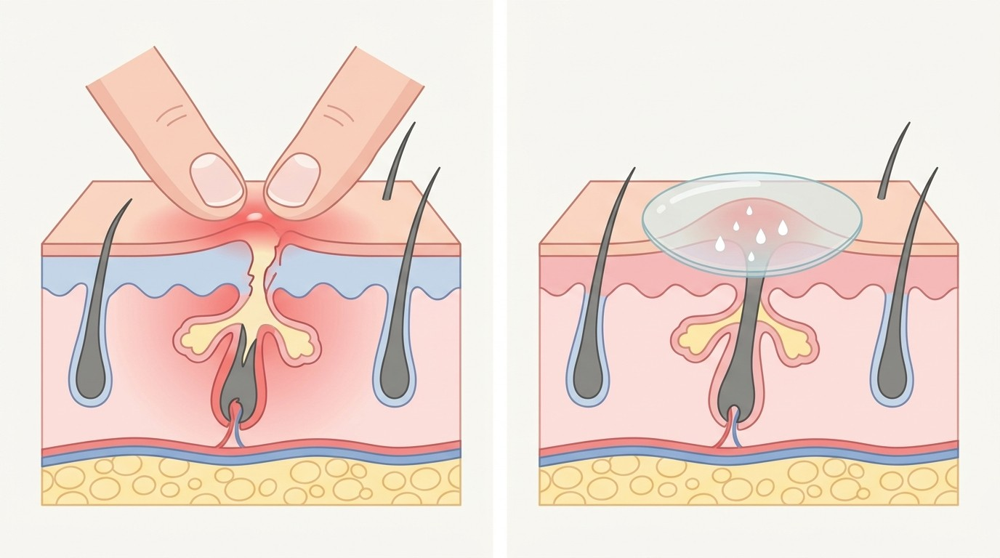
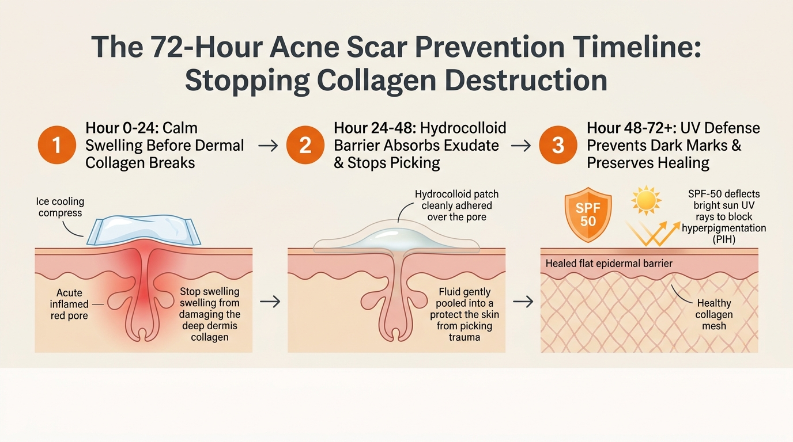
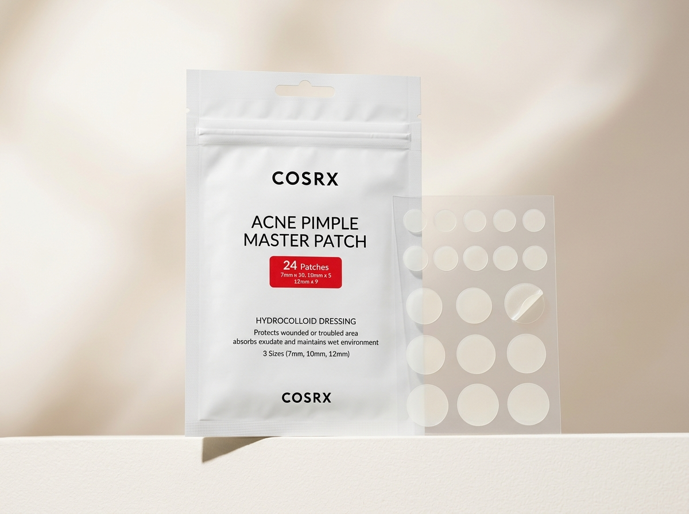
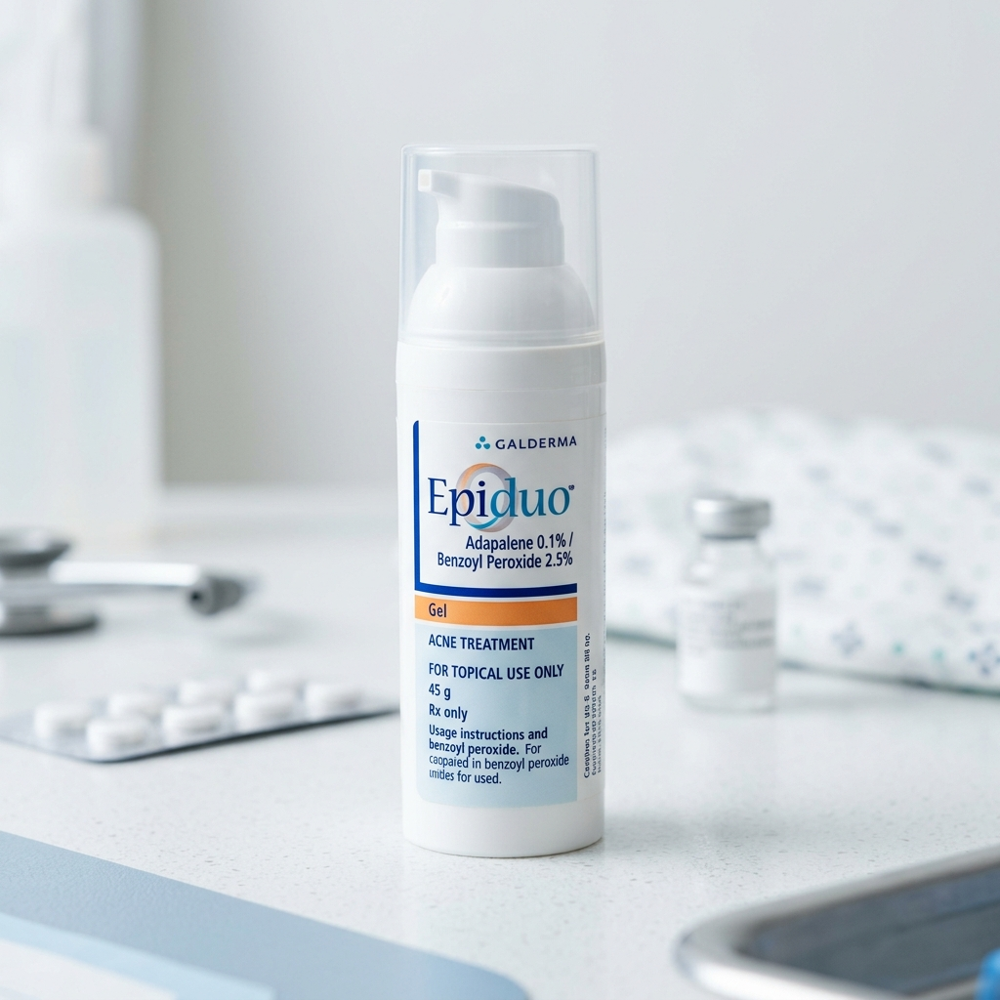
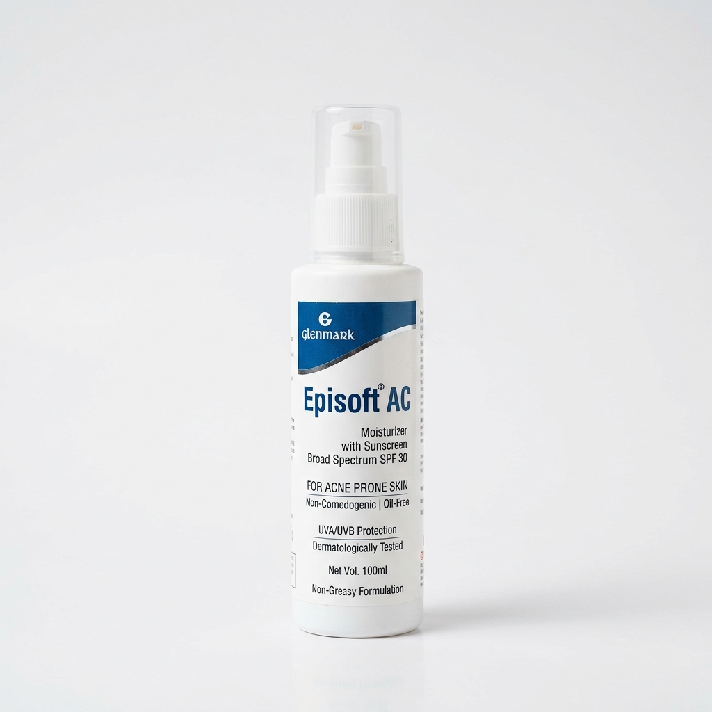

Why Do Pimples Scar? The Downward Follicle Rupture
To understand how to prevent an acne scar, it helps to understand what a pimple actually is under the surface. Your pores are lined with delicate cells and connected to oil glands. When sebum and dead skin cells trap bacteria inside the pore, your immune system rushes white blood cells to the scene. This creates swelling, redness, and pus[1].
When a pimple stays inflamed, your body produces enzymes called matrix metalloproteinases (MMPs). These enzymes act like scissors: they chew through damaged tissue to clear space for healing. But if the inflammation is too deep or lasts longer than a few days, those enzymes destroy the surrounding collagen scaffolding in your dermis[2].

The Myth of "Careful Popping"
Many people believe that using clean fingertips or a sterilized needle makes popping safe. In reality, cleanliness does not prevent mechanical physics:
- Lateral and Downward Pressure: The opening at the top of an inflamed pore is microscopic. When you pinch from the sides, the pressure radiates downward.
- Dermal Rupture: The fragile wall of the hair follicle bursts open underneath the surface. Pus, fatty acids, and bacteria are injected directly into your deep dermis.
- Collagen Deficit: The body scrambles to repair the massive breach. When it cannot produce enough replacement collagen, the skin sinks inward, leaving an icepick or boxcar scar[1].
The Picking Depth × Scar Risk Matrix
Not every breakout carries the same danger. The deeper the original inflammation sits in your skin layers, the higher the likelihood of permanent structural scarring if touched:
| Acne Type | Depth in Skin | What Squeezing Does | Permanent Scar Risk | Dermatologist Action |
|---|---|---|---|---|
| Blackhead / Whitehead | Superficial Epidermis | Forces surface debris into deeper tissue, turning a mild plug into an inflamed bump. | LOW (Unless squeezed harshly) | Use 2% Salicylic Acid wash; leave manual extractions to a professional. |
| Inflammatory Papule / Pustule | Upper Dermis | Ruptures follicle wall sideways. Triggers collagen loss and intense post-acne dark spots. | MODERATE TO HIGH | Apply a hydrocolloid patch immediately; spot treat with 2.5% Benzoyl Peroxide. |
| Nodule / Blind Cyst | Deep Reticular Dermis | Blows inflammatory enzymes through multiple collagen layers. Guaranteed deep crater formation. | EXTREME (90%+) | NEVER SQUEEZE. Apply cold ice compress and seek an in-clinic cortisone injection. |
Clinical studies show that the single strongest predictor of whether an acne lesion leaves an atrophic scar is how long the acute inflammation lasts[2]. Shaving even 48 hours off the inflammatory phase dramatically lowers scar rates.
The 72-Hour Anti-Inflammatory Window
When a tender red bump first emerges, you have an approximate 72-hour window before permanent dermal collagen architecture is compromised. Taking targeted, gentle action in these three stages preserves your skin's collagen foundation:

Phase 1 (Hours 0 to 24): Calm Acute Swelling Before Dermal Collagen Breaks
Wrap an ice cube in a clean, soft cotton handkerchief and rest it gently over the tender area for 5 minutes (never apply bare ice directly to skin). Follow with a thin spot dab of an anti-inflammatory active like Benzoyl Peroxide 2.5% or Adapalene 0.1%[6]. This constricts local blood vessels and dampens the initial rush of collagen-destroying enzymes.
Phase 2 (Hours 24 to 48): Apply the Hydrocolloid Shield
Cleanse the skin with a gentle, non-stripping face wash and let it dry completely. Stick a sterile hydrocolloid pimple patch directly over the bump. The dressing creates an airtight seal that absorbs exudate into a soft white gel bubble while completely removing your fingers from the equation[3].
Phase 3 (Hours 48 to 72+): Moisture Barrier & UV Defense
Once the patch has flattened the lesion, keep the area hydrated with a ceramide-rich moisturizer. Most importantly: apply broad-spectrum SPF 30 or SPF 50 every single morning without fail. Healing skin is vulnerable to ultraviolet radiation, which stimulates reactive melanocytes into depositing dense dark brown pigment[4],[5].
Pimple Patches: The Evidence-Backed Anti-Scarring Shield
Hydrocolloid technology was originally developed in hospital burn units and surgical centers to heal chronic wounds. When adapted into circular acne dots, they address the two main causes of acne scarring simultaneously:
1. The Physical Habit Barrier
Studies show that average humans touch their faces between 16 and 23 times per hour, often completely unconsciously while working or reading. A patch turns a textured, pickable bump into a smooth, flat surface, breaking the automatic scratch-and-pinch loop.
2. Moist Wound Healing
Drying a pimple out into a hard, crusty scab slows cell migration. Hydrocolloid keeps the wound bed humid, allowing new skin cells to slide across smoothly. Clinical trials show this speeds re-epithelialization by 40% and reduces secondary excoriation[3].

Acne Scars vs Dark Spots: The 5-Second Test
One of the most common points of confusion among acne patients in India is the difference between an acne mark and a true acne scar. Treating them requires entirely different approaches:
| Feature | Atrophic Acne Scar (True Scar) | Post-Inflammatory Hyperpigmentation (PIH) | Post-Inflammatory Erythema (PIE) |
|---|---|---|---|
| Skin Texture | Indented, pitted, or sunken (icepick, boxcar, rolling). | Completely flat and smooth to the touch. | Completely flat and smooth to the touch. |
| Underlying Cause | Loss of dermal collagen scaffolding[1]. | Excess melanin deposited by hyper-reactive pigment cells[4]. | Dilated or damaged microcapillaries under the surface. |
| Prevalence on Indian Skin | Common after severe cystic acne or picking. | Extremely common on Fitzpatrick types IV–VI[4]. | More common on fair skin; resolves into PIH on deeper skin tones. |
| Can Creams Fix It? | No topical cream can rebuild a deep crater; requires in-clinic procedures (subcision, microneedling, TCA cross). | Yes. Responds well to Kojic Acid, Azelaic Acid, Niacinamide, and strict SPF. | Yes. Responds well to soothing barrier creams, Centella, and vascular lasers. |
💡 The 5-Second Glass Test (Diascopy)
Take a clean, clear glass tumbler or magnifying glass and press it gently against your red or brown post-acne mark:
• If the mark turns white or disappears while pressed, it is PIE (vascular capillary redness).
• If the mark stays brown or dark through the glass, it is PIH (melanin pigment).
• If you feel an indentation or valley under your fingertip, it is an atrophic scar.
Dermatologist-Approved Scar Prevention Lineup
When preventing acne scars, your goal is simple: stop picking, calm the acute swelling within 72 hours, and shield the healing area from sun damage. Here are three trusted, widely available products in Indian pharmacies:
COSRX Acne Pimple Master Patch

Galderma Epiduo Gel

Glenmark Episoft AC SPF 30
Step-by-Step Routine: What to Do When a Pimple Starts
When you wake up and feel a tender, throbbing spot under your skin, follow this exact routine to prevent it from progressing into a permanent scar:
Use a gentle, foaming or gel cleanser without harsh scrubbing beads. Pat dry with a fresh, clean cotton face towel. Never scrub an inflamed blemish.
Ensure the skin is completely dry, then adhere a pimple patch directly over the bump. Keep it on for 6 to 8 hours until it turns cloudy white, then peel gently from the edge.
After evening cleansing and a lightweight moisturizer, apply a tiny pinhead dab of Benzoyl Peroxide 2.5% or Epiduo gel directly on the center of the spot.
Apply two finger-lengths of broad-spectrum sunscreen (like Episoft AC) every morning. This shields the freshly healed epidermis from UV-triggered hyperpigmentation[5].
Dermatologist Video Masterclass
Board-certified dermatologist Dr. Dray breaks down the clinical science of preventing permanent acne scars, managing post-inflammatory marks, and the medical steps to protect your skin barrier:
Video source: Dr. Dray, Board-Certified Dermatologist (Clinical routine for preventing acne marks and scarring).
Frequently Asked Questions
If I pop a pimple carefully with clean fingers, will it still cause a scar?
Yes. Even if your hands are completely clean, the mechanical pressure of squeezing pinches the delicate hair follicle against itself. Because the top opening is tiny and blocked, that force pushes pus, bacteria, and dead skin cells sideways and downward through the ruptured follicle wall right into your deep dermis. This deep collagen destruction creates permanent indented scars like icepick or boxcar marks[1].
What is the single most important step in the first 24 hours of an active pimple?
Cooling down acute swelling immediately. Applying a cold compress wrapped in a clean tissue for 5 minutes twice a day, followed by a targeted anti-inflammatory spot treatment (like 2.5% benzoyl peroxide or adapalene), prevents the inflammatory wave from reaching and chewing up deeper collagen layers[2],[6].
How do pimple patches actually prevent permanent scarring?
Pimple patches work in two distinct ways. First, they provide a physical protective shield that stops you from touching, scratching, or picking at the spot. Second, the medical-grade hydrocolloid material gently draws out wound fluid and pus upward into a white gel bubble without squeezing, maintaining a moist environment that speeds natural skin healing[3].
Why does Indian skin leave dark spots (PIH) even after small pimples heal?
Indian skin (Fitzpatrick types IV to VI) has pigment cells that are active and sensitive. Any inflammatory event, such as a pimple or picking trauma, triggers melanocytes to produce extra melanin as a defense mechanism. This creates Post-Inflammatory Hyperpigmentation (PIH). Daily broad-spectrum sunscreen prevents UV rays from darkening these spots further[4].
Can regular sunscreen stop acne scars from forming?
Sunscreen cannot fill in a pitted, indented scar, but it is essential for preventing Post-Inflammatory Hyperpigmentation (dark brown stains) and preventing ultraviolet radiation from degrading newly formed collagen. Daily SPF 30 or higher reduces post-acne mark intensity by up to 80%[5].
When should I see a dermatologist instead of treating acne at home?
You should consult a board-certified dermatologist if you develop deep, painful cystic bumps with no visible head, if your pimples leave indented pits despite not picking, or if over-the-counter treatments show no improvement after 8 to 12 weeks. Dermatologists can provide in-clinic cortisone injections to calm cysts within 24 hours and prevent scarring[7].
Peer-Reviewed Clinical References
-
[1]
Fabbrocini G, Annunziata MC, D'Arco V, et al. Acne scars: pathogenesis, classification and treatment. Dermatol Res Pract. 2010;2010:893080.
View Landmark Study on PubMed (PMID: 20981308) ↗ -
[2]
Tan J, Kang S, Leyden J. Prevalence and Risk Factors of Acne Scarring Among Patients With Acne Vulgaris. J Drugs Dermatol. 2017;16(2):97-102.
View Study on PubMed (PMID: 28388673) ↗ -
[3]
Muñoz-Garza FZ, et al. Hydrocolloid dressing reduces acne lesion duration and prevents secondary excoriation. J Cosmet Dermatol. 2021;20(10):3241-3248.
View Clinical Trial on PubMed (PMID: 34185934) ↗ -
[4]
Davis EC, Callender VD. Postinflammatory hyperpigmentation: a review of the epidemiology, clinical features, and treatment options in skin of color. J Clin Aesthet Dermatol. 2010;3(7):20-31.
View Study on PubMed (PMID: 20725554) ↗ -
[5]
Passeron T, Lim HW, Goh CL, et al. Photoprotection according to ethnic background and skin phototype. J Eur Acad Dermatol Venereol. 2018;32(7):1103-1111.
View Clinical Consensus on PubMed (PMID: 29468761) ↗ -
[6]
Loss MJ, Leung S, Chien A, et al. Early intervention with topical retinoids to prevent microcomedone progression and atrophic scarring. J Am Acad Dermatol. 2018;79(2):292-299.
View Study on PubMed (PMID: 29935987) ↗ -
[7]
Savant SS. Surgical and medical management of post-acne scarring in Indian skin types. Indian J Dermatol. 2006;51(4):267-274.
View Indian Dermatology Record ↗